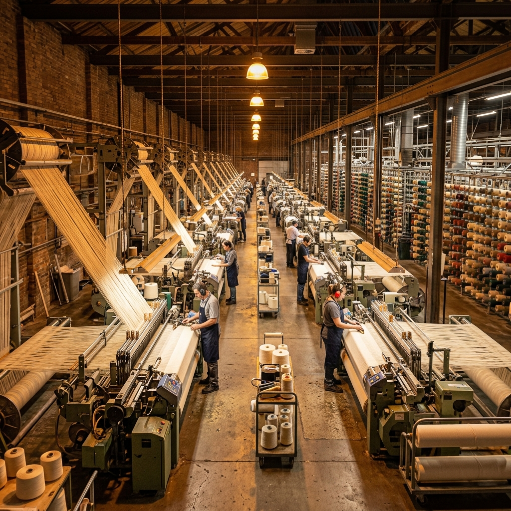

Our Story
Crafting Excellence Since 2005
Over two decades of passion, precision, and commitment to textile manufacturing excellence.
Over two decades of passion, precision, and commitment to textile manufacturing excellence.
GKB Textiles is a leading manufacturer and exporter of premium-quality cotton grey fabrics based in Erode, Tamil Nadu, India. With over two decades of industry expertise, we specialize in producing high-quality woven fabrics using advanced Picanol OmniPlus 800 Air Jet Looms.
Our commitment to quality, timely delivery, technical excellence, and customer satisfaction has enabled us to build long-term relationships with clients across domestic and international markets.
We are equipped to manufacture a wide range of woven fabrics with customized constructions, unique dobby patterns, and specialized fabric developments tailored to customer requirements.

The guiding principles that drive every thread we weave and every fabric we deliver.
To become a globally recognized textile manufacturing partner known for superior quality, innovation, reliability, and customer-centric solutions while continuously expanding our capabilities and market presence.
To deliver high-quality woven fabrics through advanced technology, skilled craftsmanship, and efficient manufacturing practices while ensuring timely delivery, cost-effective production, and consistent customer satisfaction.
B.E. Mechanical Engineering | Founder & Proprietor
With over 20 years of textile manufacturing expertise, Mr. G. Balakrishnan founded GKB Textiles with a singular vision: to produce cotton grey fabrics of exceptional quality. His technical background in mechanical engineering combined with deep industry knowledge has been instrumental in establishing GKB Textiles as a trusted name in the textile sector.
Under his leadership, GKB Textiles has grown from a modest operation with Rapier looms to a modern manufacturing facility equipped with imported Picanol OmniPlus 800 Air Jet and Dobby Looms, serving both domestic and international markets.
At GKB Textiles, quality has always been our highest priority. We believe in delivering fabrics that meet exact customer requirements rather than focusing solely on volume. Every order receives personal attention, technical supervision, and a commitment to excellence. With continuous investments in technology and infrastructure, we strive to develop unique fabric constructions and long-lasting partnerships built on trust, reliability, and performance.
Founder & Proprietor
From humble beginnings to advanced manufacturing excellence.
Started operations with Rapier Shuttleless Loom technology.
Completed the first phase of operations and prepared for expansion.
Established a fully integrated production facility under one roof and imported 6 Picanol OmniPlus 800 Air Jet Looms.
Expanded capacity with the addition of 3 imported Picanol OmniPlus 800 Air Jet Looms.
Expanded weaving capabilities with the addition of 3 imported Picanol OmniPlus 800 Dobby Looms from the United States.
Installed a 100 kW Solar Power Plant to support sustainable manufacturing.
Added 2 imported Picanol OmniPlus 800 Dobby Looms from France, enhancing production flexibility and design capabilities.
A commitment to quality, technology, and customer satisfaction that sets us apart.